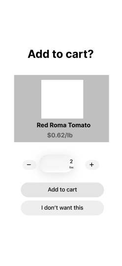
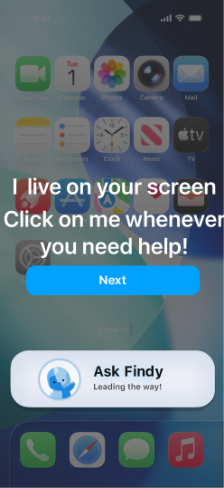
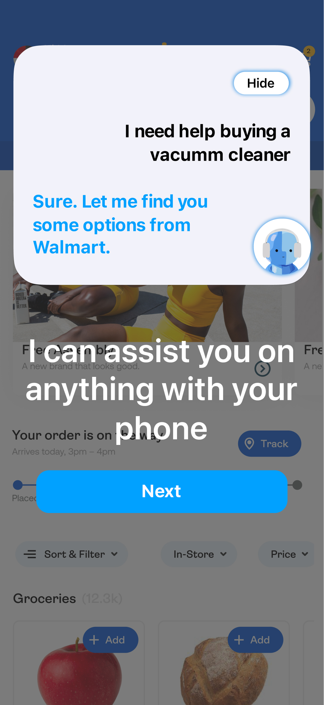

Low-Fidelity Concept Frames
We first envisioned Findy as a B2B assistant who would complete tasks for seniors, seeing that current senior modes do not effectively eliminate the frustrations of technology for the group. We then proceeded with a scenario where Findy helps the user easily order groceries online.

Mid-Fidelity Wireframes
After receiving the chance to speak to many seniors and hear their perspectives, we realized our initial approach was wrong. Many seniors still desire to learn, connect, and grow with technology, rather than minimize usage. Our focus shifted to designing an assistant that supports seniors navigating through the unfamiliar.


High-Fidelity Screens
Yes, technology can be frustrating for seniors, but that doesn’t mean it should be avoided completely. Our finished prototype presents a version of Findy that walks alongside the user, guiding them rather than controlling them. Feel free to explore Findy’s features!